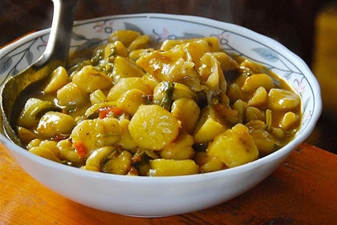

Skyu

Description
Skyu (pronounced as skew) is kind of like a Ladakhi pasta.
Ingredients
- Wholemeal wheat flour (advisable not to use refined flour)
- Potatoes
- Green peas
- Fresh tomatoes
- Onions
- Coriander
- Salt
- Turmeric powder
- Cumin powder
- Red Chilli powder
- Cooking oil
Steps
- Knead the dough. Do not add anything before kneading. Also, the dough should be relatively dry.Set it aside.
- Heat a few teaspoons of cooking oil in a deep pan over low to medium heat.
- Add chopped onions and fry till it turns light brown.
- Add the chopped tomatoes, potatoes and green peas.
- Add salt, turmeric powder, cumin powder, and red chilli powder according to your taste.
- Cook for five minutes over low heat. Add water according to the amount of dough and vegetables. Let it boil.
- In the meantime, we are going to make the skyu dough. It's a simple procedure, take a small chunk of
dough, a size of a small marble, and press it with your thumb to make a small circular bowl shape.
- When the vegetable stew boils, add the dough. Do not stir and let it boil, until the stew thickens.
- Serve it hot in a bowl with a sprinkle of fresh coriander.
Home